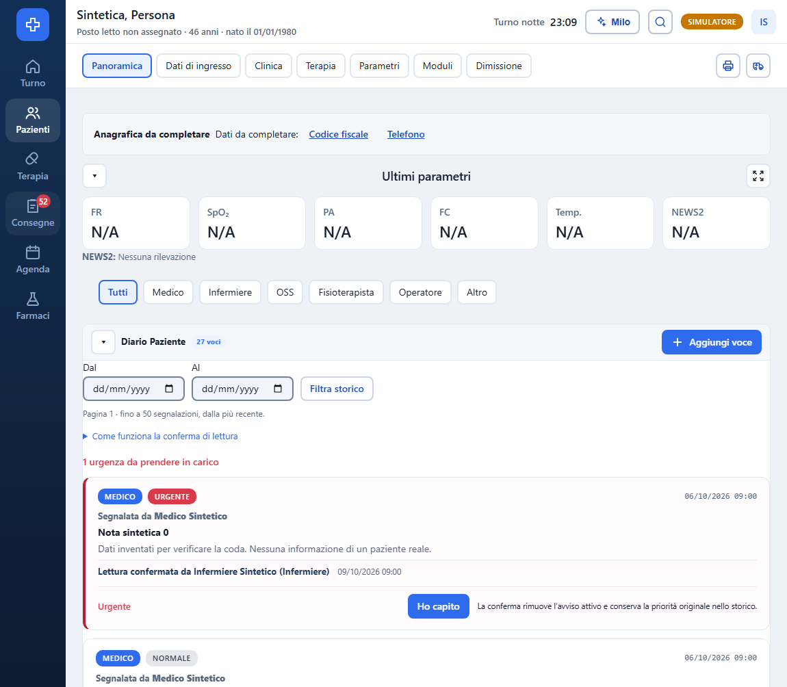

21 serial browser assertions PASS
Actual SPA, guarded synthetic transport; real local PostgreSQL separate. No production patient writes.
- PASS 424 AC1/4 concise action and one collapsed guide in diary; brief content complete
- PASS AC1/2 badge53 opens default Non confermate and explains both sources/all dates without implicit receipts
- PASS AC3 failed reading keeps queue/count and exposes retry without clinical takeover
- PASS AC3 validated read removes exactly one, updates badge52, returns keyboard focus and leaves urgency active
- PASS AC1/4 complete bounded pagination reaches52 mixed-source notes and exact26+26 patient counts
- PASS AC4 queue patient outside first roster page opens exact requested diary, never first patient fallback
- PASS AC3 diary retains Letta plus separate Ho capito, then explicit clinical takeover does not decrement unread twice
- PASS AC4 unavailable per-patient counts are labeled, never fabricated0; retry recovers
- PASS AC2 sidebar reopens unread instead of patient diary; reload retains server receipts and badge
- PASS AC1/2/4 mobile grayscale conveys source/priority/nonconfirmed state and patient counts without overflow
- PASS 424 mobile brief diary preserves content and one guide without horizontal overflow
- PASS stale receipt after leaving queue cannot publish a reading event or success into another view
- PASS switching queue/patient views preserves the exact patient draft without any clinical save
- PASS role/session switch fences late read receipt and denied diary role makes no queue/count request
- PASS 424 failure409 and malformed response never manufacture confirmation; guarded retry
- PASS 424 pending reading is disabled and sends exactly one read purpose; authoritative server identity survives refetch
- PASS 424 doctor also has explicit reading action and exact server role/time
- PASS Independent author restriction: explanatory state, no self-read action, guide keyboard does not write
- PASS Independent authoritative receipt denies handover self-action, diary action remains available
- PASS Independent authoritative hostile server identity stays escaped with full date and separate urgency
- PASS Independent direct patient chart action, server reader/date, unchanged urgency and after reload
Failed preliminary fixture attempts retained; no product edit by QA.
